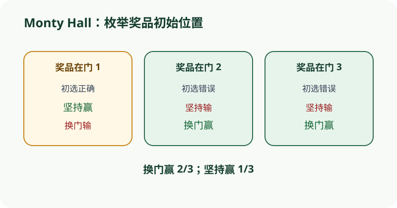

主持人知道奖品位置且必定打开空门时，换门继承了初选错误的全部概率。
依据本地课程资料 homework/hw09.pdf 重绘；交互用于解释概念，不替代题面或证明。

CS70 · 第 10 讲
从概率空间走向可计算的量：本讲把随机结果映射为实数，用分布律、期望与方差刻画离散随机变量的行为，并通过二项分布、几何分布、超几何分布、Balls-and-Bins 以及成对独立 vs 相互独立等核心模型，建立离散概率的算法直觉。
设 \((\Omega, \mathcal{F}, \mathbb{P})\) 为概率空间。离散随机变量 \(X: \Omega \to \mathbb{R}\) 是一个只取有限个或可列个实数值的函数；我们通常关心它的分布律（probability mass function, PMF），定义为对每个 \(x \in \mathbb{R}\),
\[ p_X(x) = \mathbb{P}[X = x] = \sum_{\omega \in \Omega: X(\omega)=x} \mathbb{P}[\omega]. \]
PMF 必须满足非负性 \(p_X(x) \ge 0\) 与归一性 \(\sum_{x} p_X(x) = 1\)。反过来，任何满足这两条的函数都可定义一个离散分布。注意 PMF 是逐点概率，而不是区间概率：对离散随机变量，单点可正，但长度为零的区间概率为零只在连续情形成立。
累积分布函数（CDF）定义为 \(F_X(x) = \mathbb{P}[X \le x]\)，对离散随机变量它是右连续阶梯函数，跳跃高度恰好等于该点的 PMF 值。CDF 在 \(x \to -\infty\) 时趋于 0，在 \(x \to +\infty\) 时趋于 1。用 CDF 计算区间概率是常见技巧：
\[ \mathbb{P}[a < X \le b] = F_X(b) - F_X(a). \]
离散随机变量之间可以谈联合分布与独立性：\(X, Y\) 独立当且仅当 \(p_{X,Y}(x,y) = p_X(x)p_Y(y)\) 对所有 \(x, y\) 成立。独立性是逐点乘积，而不是事件层面的独立，尽管两者在自然构造下等价。
在 CS 70 的讨论与作业里，识别随机变量的定义域往往是第一步。例如投掷 \(n\) 次不均匀硬币，正面次数 \(X\) 的取值范围是 \(\{0, 1, \dots, n\}\)，而不是实数区间。把定义域写错会导致后续期望与方差计算全部错位。
袋中有 3 个红球、2 个蓝球，随机无放回抽取 2 个。令 \(X\) 为抽到的红球数，求 \(p_X(k)\) 与 \(F_X(1)\)。
分布律：样本空间大小为 \(\binom{5}{2} = 10\)。当 \(k=0\) 时，两球皆蓝，有 \(\binom{2}{2}=1\) 种，故 \(p_X(0) = 1/10\)；当 \(k=1\) 时，一红一蓝，有 \(\binom{3}{1}\binom{2}{1}=6\) 种，故 \(p_X(1) = 6/10\)；当 \(k=2\) 时，两球皆红，有 \(\binom{3}{2}=3\) 种，故 \(p_X(2) = 3/10\)。
归一性验证：\(1/10 + 6/10 + 3/10 = 1\)。
CDF：\(F_X(1) = \mathbb{P}[X \le 1] = p_X(0) + p_X(1) = 7/10\)。
这个例子同时展示了超几何分布的形状，下一节会把它抽象成一般公式。
设离散随机变量 \(X\) 的取值集合为 \(\mathcal{X}\)。期望（期望值）定义为
\[ \mathbb{E}[X] = \sum_{x \in \mathcal{X}} x \cdot p_X(x), \]
只要级数绝对收敛就存在。期望是线性算子：对任意常数 \(a, b\) 与同分布上的随机变量 \(X, Y\)，
\[ \mathbb{E}[aX + bY] = a\mathbb{E}[X] + b\mathbb{E}[Y], \]
不需要 \(X, Y\) 独立。线性期望是 CS 70 计数与 Balls-and-Bins 问题的核心工具，因为它把复杂随机变量拆成简单随机变量之和。
方差定义为 \(\operatorname{Var}(X) = \mathbb{E}[(X - \mathbb{E}[X])^2]\)，等价于常用计算公式
\[ \operatorname{Var}(X) = \mathbb{E}[X^2] - (\mathbb{E}[X])^2. \]
方差衡量随机变量偏离期望的平方期望，具有性质 \(\operatorname{Var}(aX + b) = a^2 \operatorname{Var}(X)\)。当 \(X, Y\) 独立时，方差可加：
\[ \operatorname{Var}(X + Y) = \operatorname{Var}(X) + \operatorname{Var}(Y). \]
不独立时该公式一般不成立，必须考虑协方差项。
指标随机变量（indicator random variable）是取值为 0 或 1 的随机变量：对事件 \(A\)，定义 \(I_A(\omega) = 1\) 当 \(\omega \in A\)，否则为 0。它的期望就是事件概率：
\[ \mathbb{E}[I_A] = \mathbb{P}[A]. \]
把 \(X\) 写成指标之和，例如 \(X = \sum_{i=1}^n I_{A_i}\)，就能用线性期望直接算 \(\mathbb{E}[X] = \sum_i \mathbb{P}[A_i]\)，而无需先求出 \(X\) 的分布。这是 Monte Carlo 型计数问题（如 balls-into-bins 的空箱数、匹配问题成功数）的标准思路。
投掷一枚不均匀硬币 \(n\) 次，正面概率为 \(p\)。令 \(X\) 为正面次数，\(I_i\) 为第 \(i\) 次出现正面的 indicator。
期望：\(X = \sum_{i=1}^n I_i\)，故
\[ \mathbb{E}[X] = \sum_{i=1}^n \mathbb{E}[I_i] = \sum_{i=1}^n p = np. \]
方差：各次独立，\(\operatorname{Var}(I_i) = p(1-p)\)，故
\[ \operatorname{Var}(X) = \sum_{i=1}^n \operatorname{Var}(I_i) = np(1-p). \]
对比无放回情形：从 \(N\) 球（其中 \(M\) 红）无放回抽 \(n\) 球，红球数 \(X\) 的期望同样是 \(n \cdot M/N\)（由对称性），但方差为 \(n \cdot \frac{M}{N}(1-\frac{M}{N}) \cdot \frac{N-n}{N-1}\)，多了一个有限总体修正因子。期望相同、方差不同，是辨析两类抽样的关键信号。
在 \(n\) 次独立伯努利试验中，每次成功概率为 \(p\)，则成功次数 \(X\) 服从二项分布，记 \(X \sim \operatorname{Binomial}(n, p)\)，其 PMF 为
\[ \mathbb{P}[X = k] = \binom{n}{k} p^k (1-p)^{n-k}, \quad k = 0, 1, \dots, n. \]
期望 \(\mathbb{E}[X] = np\)、方差 \(\operatorname{Var}(X) = np(1-p)\) 可由上节 indicator 方法直接得到。二项分布是 CS 70 讨论 9A「Head Count」的核心：投掷正面概率为 \(2/5\) 的硬币 20 次，正面数即 \(\operatorname{Binomial}(20, 2/5)\)。作业 09 第 6 题（航模测试）则展示了二项分布在多天独立筛选中的迭代：若每架飞机每天成功概率为 \(p\)，则 \(t\) 天后存活数为 \(\operatorname{Binomial}(n, p^t)\)。
几何分布描述的是「首次成功所需的试验次数」。设每次成功概率为 \(p\)，试验独立，则首次成功出现在第 \(k\) 次的概率为
\[ \mathbb{P}[X = k] = (1-p)^{k-1} p, \quad k = 1, 2, 3, \dots. \]
这是以 \(\{1, 2, 3, \dots\}\) 为定义域的几何分布（注意也有以 \(\{0, 1, 2, \dots\}\) 定义的版本，差一次平移）。它的期望为 \(\mathbb{E}[X] = 1/p\)，方差为 \(\operatorname{Var}(X) = (1-p)/p^2\)，可通过等比数列求和或母函数推导。
几何分布最重要的性质是无记忆性（memorylessness）：对任意正整数 \(k, m\),
\[ \mathbb{P}[X > k+m \mid X > m] = \mathbb{P}[X > k]. \]
直觉上，已经失败了 \(m\) 次不会影响后续仍需等待的时间分布。这是几何分布独有的特征（在离散分布中，只有几何分布具有无记忆性），也是讨论 9B 第 1 题的核心考点。
投掷一枚公平骰子，直到出现 6 点为止，记录投掷次数为 \(X\)。
分布识别：每次出现 6 的概率为 \(p = 1/6\)，独立重复，故 \(X \sim \operatorname{Geometric}(1/6)\)（以 \(\{1, 2, \dots\}\) 为定义域）。
期望与方差：\(\mathbb{E}[X] = 1/p = 6\)，\(\operatorname{Var}(X) = (1-p)/p^2 = (5/6)/(1/36) = 30\)。
无记忆性应用：已知前 3 次都没出现 6，还需投掷次数的条件分布仍是 \(\operatorname{Geometric}(1/6)\)，期望仍为 6。形式化地，对 \(Y = X - 3 \mid X > 3\)，有
\[ \mathbb{P}[Y = k] = \mathbb{P}[X = k+3 \mid X > 3] = \frac{(5/6)^{k+2}(1/6)}{(5/6)^3} = (1/6)(5/6)^{k-1}, \]
即 \(Y\) 与原分布相同。
超几何分布描述无放回抽样中的成功次数：总体含 \(N\) 个元素，其中 \(M\) 个为「成功」。从中无放回抽取 \(n\) 个，成功数 \(X\) 满足
\[ \mathbb{E}[X] = n \cdot \frac{M}{N}, \quad \operatorname{Var}(X) = n \cdot \frac{M}{N} \left(1 - \frac{M}{N}\right) \cdot \frac{N-n}{N-1}. \]
期望与有放回（二项）情形相同，但方差多了一个有限总体修正因子 \((N-n)/(N-1) < 1\)，反映无放回抽样减少了波动。当 \(N\) 远大于 \(n\) 时，超几何近似于二项分布。讨论 8B「复活节彩蛋」与作业 09「对称弹珠」都是超几何背景的典型题。
Balls-and-Bins 把 \(m\) 个球独立、均匀地投入 \(n\) 个编号箱。基本问题包括：指定箱空着的概率、至少 \(k\) 个箱空着的概率、最大负载等。当 \(m = n\) 时，指定某箱为空的概率是
\[ \left(1 - \frac{1}{n}\right)^n \;\to\; \frac{1}{e} \quad (n \to \infty). \]
前 \(k\) 个指定箱全空的概率为 \((1 - k/n)^n\)。讨论 9A 第 1 题进一步用 Union Bound 估计「至少 \(k\) 箱空」的概率上界：设 \(A_i\) 为第 \(i\) 组 \(k\) 箱全空的事件，共有 \(m = \binom{n}{k}\) 组，则
\[ \mathbb{P}[\text{至少 } k \text{ 箱空}] = \mathbb{P}\left[\bigcup_{i=1}^m A_i\right] \le m \cdot \left(1 - \frac{k}{n}\right)^n = \binom{n}{k}\left(1 - \frac{k}{n}\right)^n. \]
Union Bound 的优势是避免复杂依赖，劣势是给的只是上界，不一定紧。
关键辨析：Balls-and-Bins 默认每次投球独立且均匀，对应「有放回、顺序重要」的样本空间，大小为 \(n^m\)。这与「stars and bars」的非均匀分布截然不同——后者每种组合（occupancy numbers）等可能，但每次投球不再独立。CS 70 明确要求区分这两种抽样机制。
把 4 个球独立均匀投入 3 个箱，令 \(X\) 为空箱数，求 \(\mathbb{E}[X]\)。
指标分解：设 \(I_i\) 为第 \(i\) 箱为空的 indicator，则 \(X = I_1 + I_2 + I_3\)。由对称性，
\[ \mathbb{E}[I_i] = \mathbb{P}[\text{箱 } i \text{ 空}] = \left(1 - \frac{1}{3}\right)^4 = \left(\frac{2}{3}\right)^4 = \frac{16}{81}. \]
故
\[ \mathbb{E}[X] = 3 \cdot \frac{16}{81} = \frac{16}{27}. \]
无需枚举：我们并未先求出 \(X\) 的分布（那需要容斥或斯特林数），直接由线性期望得到结果。这是 indicator 方法威力的典型体现。
对比：若问「某指定箱空」与「某指定两箱同时空」是否独立？前者概率 \((2/3)^4 = 16/81\)，后者 \((1/3)^4 = 1/81\),而乘积 \(16/81 \times 16/81 \neq 1/81\)，故不独立——这与讨论 9A 第 1(f) 题结论一致。
事件族 \(\{A_1, \dots, A_n\}\) 成对独立（pairwise independent）指对任意 \(i \neq j\)，\(\mathbb{P}[A_i \cap A_j] = \mathbb{P}[A_i]\mathbb{P}[A_j]\)。相互独立（mutual independence）则更强：要求对任意子集 \(S \subseteq \{1,\dots,n\}\),
\[ \mathbb{P}\left[\bigcap_{i \in S} A_i\right] = \prod_{i \in S} \mathbb{P}[A_i]. \]
成对独立不蕴含相互独立，这是 CS 70 独立性辨析的核心难点。讨论 9A 第 3 题给出了经典反例：掷两个公平骰子，设 \(A_1\) 为「第一骰为 1」、\(A_2\) 为「第二骰为 6」、\(A_3\) 为「两骰和为 7」。每个事件的概率都是 \(1/6\)，每对事件的交概率都是 \(1/36\)，故成对独立成立。但三者同时发生的概率为 \(1/36\)，而乘积为 \(1/216\)，故不相互独立。
独立性辨析的常见手法： 1. 验证定义：直接计算 \(\mathbb{P}[A \cap B]\) 与 \(\mathbb{P}[A]\mathbb{P}[B]\) 是否相等。 2. 极端情形：若 \(A\) 发生必然导致 \(B\) 发生（如「前两箱空」蕴含「第一箱空」），则只要 \(0 < \mathbb{P}[A] < 1\) 且 \(\mathbb{P}[B] < 1\)，两者必不独立。 3. 条件概率：检查 \(\mathbb{P}[A \mid B]\) 是否等于 \(\mathbb{P}[A]\)。若不相等，则不独立。
作业 09 第 3 题（Mario 硬币）进一步说明：随机取一枚硬币掷两次，两次正面事件 \(Y_1, Y_2\) 不独立，因为第一次正面提供了关于所选硬币偏倚的信息，从而影响第二次正面的概率。而随机取两枚不同硬币各掷一次，两次正面事件 \(X_1, X_2\) 同样不独立，因为第一次正面暗示第一枚硬币偏倚较高，从而影响第二枚硬币的分布（两枚不能相同）。两种情形都需用贝叶斯更新严格证明。
设事件 \(A, B\) 独立，\(\mathbb{P}[A] = 1/2\)，\(\mathbb{P}[B] = 1/2\)。令 \(C\) 为「\(A\) 与 \(B\) 恰有一个发生」，即 \(C = (A \cap B^c) \cup (A^c \cap B)\)。
求 \(C\) 的概率：\(\mathbb{P}[C] = \mathbb{P}[A]\mathbb{P}[B^c] + \mathbb{P}[A^c]\mathbb{P}[B] = \frac{1}{2}\cdot\frac{1}{2} + \frac{1}{2}\cdot\frac{1}{2} = \frac{1}{2}\)。
检查 \(A, C\) 独立性：\(\mathbb{P}[A \cap C] = \mathbb{P}[A \cap B^c] = \frac{1}{4}\)，而 \(\mathbb{P}[A]\mathbb{P}[C] = \frac{1}{2} \cdot \frac{1}{2} = \frac{1}{4}\)，故独立。同理 \(B, C\) 独立。
检查 \(A, B, C\) 相互独立性：\(\mathbb{P}[A \cap B \cap C] = 0\)（\(C\) 要求恰一个发生，与 \(A \cap B\) 矛盾），但 \(\mathbb{P}[A]\mathbb{P}[B]\mathbb{P}[C] = 1/8 \neq 0\)，故三者不成相互独立。
这个例子说明：即使两两独立，三者的联合乘积条件仍可失败。构造此类反例的关键是让第三个事件成为前两个事件的「异或」类函数。
依据本地课程资料 homework/hw09.pdf 重绘；交互用于解释概念，不替代题面或证明。

期望相同：无放回抽 \(n\) 次抽到红球的期望仍是 \(n \cdot M/N\)。由对称性，每次抽到红球的边际概率都是 \(M/N\)，线性期望不要求独立。不同的是方差：无放回方差多一个有限总体修正因子 \((N-n)/(N-1)\)。
二项分布计数固定 \(n\) 次试验中的成功次数，几何分布计数首次成功所需的试验次数。两者定义域、期望公式、方差公式都不同。几何分布独有的无记忆性在二项分布中没有对应。
成对独立只要求任意两个事件独立，相互独立要求任意子集的交概率等于概率乘积。讨论 9A 第 3 题（两骰子、第一骰为 1、第二骰为 6、和为 7）是成对独立但非相互独立的经典反例。
默认的 Balls-and-Bins 是球独立、均匀地投箱，对应「有放回、顺序重要」的样本空间（大小 \(n^m\)）。Stars and bars 给出的是组合数，但每种组合不等可能。混淆两者会导致概率计算错误。
方差可加性只在 \(X, Y\) 独立（或不相关）时成立。一般情形需加上 \(2\operatorname{Cov}(X,Y)\)。对无放回抽样的超几何分布，协方差为负，导致方差比二项情形更小。
问题：设随机变量 \(X\) 取值 \(\{1, 2, 3\}\)，且 \(\mathbb{P}[X = k] = c \cdot k\)。求常数 \(c\)。
问题：设 \(X \sim \operatorname{Geometric}(p)\)（以 \(\{1,2,\dots\}\) 为定义域）。以下哪项成立？
问题：掷两枚公平骰子。设 \(A\) 为「第一枚为奇数」，\(B\) 为「第二枚为奇数」，\(C\) 为「和为奇数」。以下正确的是：
问题：将 \(n\) 个球独立均匀投入 \(n\) 个箱，指定某箱为空的概率趋近于 \(1/e\)。若改为「指定两箱同时为空」，概率趋近于：
discussion/dis08b.pdf · 2–4 · confidence: high · Easter Eggs 用全概率规则求第 2 次抽到巧克力概率；Poisoned Smarties 用全概率与贝叶斯逆推工厂来源。discussion/dis09a.pdf · 1–3 · confidence: high · 第 1 题计算空箱概率并用 Union Bound 估计至少 k 箱空；第 2 题识别 Binomial(20, 2/5)。discussion/dis09a.pdf · 4 · confidence: high · 事件 {第一骰=1}、{第二骰=6}、{和=7} 两两独立但三者不独立。homework/hw09.pdf · 2–4 · confidence: high · Mario 硬币题比较「换币」与「同币两次」的独立性差异；航模测试展示 Xt ~ Binomial(n, p^t)。cs70-cheatsheet.pdf · R.V. 列 · confidence: low · Cheatsheet 列出 Geometric/Poisson 分布相关公式作为参考。